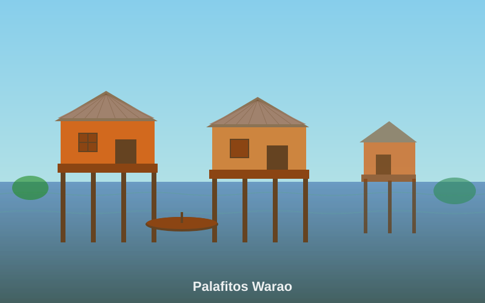
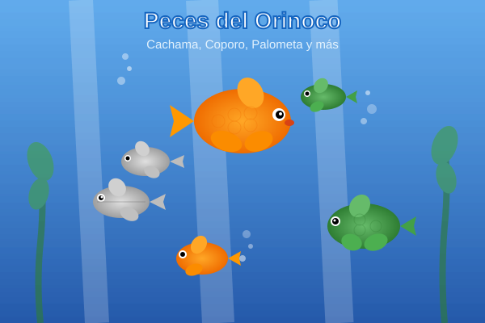

Un Mosaico de Agua y Selva
El estado Delta Amacuro, ubicado en el extremo oriental de Venezuela, es una de las regiones más singulares y biodiversas del planeta. Su geografía está dominada por el majestuoso Delta del Río Orinoco, un laberinto de miles de caños, ríos e islas que se abren en abanico antes de entregar sus aguas al Océano Atlántico.
Datos clave:
- Extensión: 40,200 km² (4.6% del territorio nacional)
- Capital: Tucupita
- Fundación: 1884 como territorio federal
- Delta del Orinoco: 18,810 km² divididos en ~60 caños y 40 ríos
- Población indígena: Mayormente Warao, con 8,000-9,000 años de antigüedad

Paisaje del Delta del Orinoco
Un Mosaico de Agua y Selva
El estado Delta Amacuro, ubicado en el extremo oriental de Venezuela, es una de las regiones más singulares y biodiversas del planeta. Su geografía está dominada por el majestuoso Delta del Río Orinoco, un laberinto de miles de caños, ríos e islas que se abren en abanico antes de entregar sus aguas al Océano Atlántico.
Datos clave:
- Extensión: 40,200 km² (4.6% del territorio nacional)
- Capital: Tucupita
- Fundación: 1884 como territorio federal
- Delta del Orinoco: 18,810 km² divididos en ~60 caños y 40 ríos
- Población indígena: Mayormente Warao, con 8,000-9,000 años de antigüedad
Paisaje del Delta del Orinoco
El Pueblo Warao: Guardianes del Delta

Los Warao, cuyo nombre significa "gente de la canoa" o "gente de bajío", son el grupo humano más antiguo de Venezuela. Su cultura ha florecido en este entorno acuático durante aproximadamente 8,000-9,000 años.
Vivienda y Vida Cotidiana
Viven en palafitos, viviendas construidas sobre pilotes de madera a orillas de los ríos, perfectamente adaptadas a las crecidas estacionales. La curiara (canoa monóxila) es el centro de su vida, utilizada para la pesca, el transporte y la conexión entre comunidades.
La Palma de Moriche: Árbol de la Vida
Su cosmovisión está profundamente ligada a la palma de moriche, considerada sagrada:
- Alimento: Frutos nutritivos y harina para pan (Sarao o Yuruma)
- Artesanía: Fibra para cestas, chinchorros y objetos decorativos
- Construcción: Madera para viviendas y estructuras
- Proteína: Gusanos de moriche (mojojoy), fuente tradicional de nutrientes
Sabores del Río y la Selva
La gastronomía deltana es un reflejo de su entorno acuático, con platos basados en la abundante pesca del Orinoco y los frutos de la palma de moriche.
Sancocho de Pescado
Sopa nutritiva elaborada con pescado fresco del Orinoco (cachama, coporo, bagre), yuca, plátano y verduras. Plato reconfortante y tradicional de las comunidades ribereñas.
Lau-Lau
Pez de carne blanca y delicada del río Orinoco. Se prepara frito, asado o en guisos. Su sabor suave lo hace favorito en la región deltana.
Gusanos de Moriche
Larvas de escarabajo que crecen en las palmas de moriche. Fuente tradicional de proteína para los Warao, se consumen asados o fritos. Alto valor nutricional.
Pan de Moriche
Pan tradicional Warao llamado "Sarao" o "Yuruma", elaborado con harina extraída del tronco de la palma de moriche. Base de la alimentación ancestral.

Sancocho de Pescado

Lau-Lau Frito

Gusanos de Moriche
Santuario de Vida Silvestre
El Delta del Orinoco es uno de los ecosistemas mejor conservados de Venezuela y un patrimonio natural único en el mundo. Su diversidad abarca desde selvas tropicales hasta manglares costeros.
Fauna Emblemática
Jaguar (Panthera onca)
El felino más grande de América habita en las selvas deltanas. Depredador tope del ecosistema, excelente nadador.
Guacamayas
Aves de plumaje colorido que llenan el cielo del delta. Incluye especies como la guacamaya roja y la guacamaya azul y amarilla.
Manatí del Caribe
Mamífero acuático herbívoro que habita en caños y ríos del delta. Especie vulnerable que requiere protección.
Delfín del Orinoco
Delfín de río color rosado, único de la cuenca del Orinoco. Considerado sagrado por las comunidades indígenas.
Galería de Fauna

Jaguar en su hábitat natural

Guacamayas rojas y verdes

Peces del Orinoco

Manatí del Caribe
Ecosistemas del Delta
- Bosques de Manglar: Protegen las costas y sirven de criadero para numerosas especies marinas
- Selva Tropical: Alta biodiversidad con especies endémicas de flora y fauna
- Sabanas Inundables: Se inundan estacionalmente, creando refugio para aves acuáticas
- Estuarios: Zona de transición entre agua dulce y salada, ecosistema único
Una Aventura Inolvidable
Explorar el Delta Amacuro es una experiencia única que combina ecoturismo, cultura y aventura en uno de los paisajes más extraordinarios de Venezuela.
Navegación por los Caños
Recorre el laberinto de ríos y caños en curiara, la embarcación tradicional Warao. Descubre la intrincada red acuática del delta.
Observación de Fauna
Avistamiento de delfines rosados, manatíes, jaguares, guacamayas y cientos de especies de aves en su hábitat natural.
Turismo Comunitario
Convive con comunidades Warao, aprende sobre sus tradiciones, artesanías y forma de vida en armonía con el delta.
Parque Nacional Mariusa
Área protegida de 331,000 hectáreas que conserva la biodiversidad del delta. Ecoturismo responsable y sustentable.
Sobre Este Proyecto Educativo
U.E. Juan Crisóstomo Falcón
Unidad Educativa Juan Crisóstomo Falcón
Ubicación: Barcelona, Estado Anzoátegui, Venezuela
Este proyecto forma parte de una iniciativa estudiantil para promover el conocimiento y preservación del patrimonio cultural y natural venezolano. A través de la investigación y divulgación sobre Delta Amacuro, buscamos:
- Valorar la diversidad cultural de Venezuela
- Dar visibilidad a la cultura ancestral Warao
- Concientizar sobre la importancia de conservar ecosistemas únicos
- Aplicar tecnología (código QR, web) para fines educativos
- Desarrollar habilidades de investigación y presentación
"Preservar nuestra historia y biodiversidad es responsabilidad de todos. Este proyecto es nuestro aporte al conocimiento y valoración del Delta Amacuro."
Acceso Rápido vía Código QR
Escanea este código QR para acceder a la página desde cualquier dispositivo móvil

El código QR se actualizará una vez que la página esté desplegada en Railway